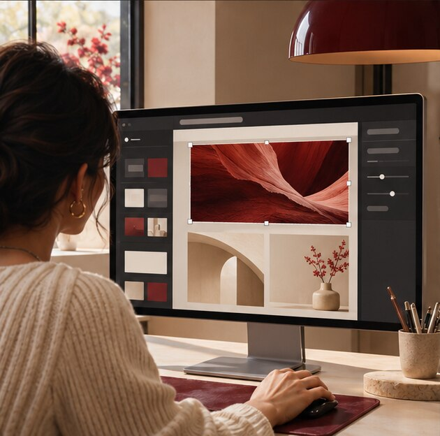
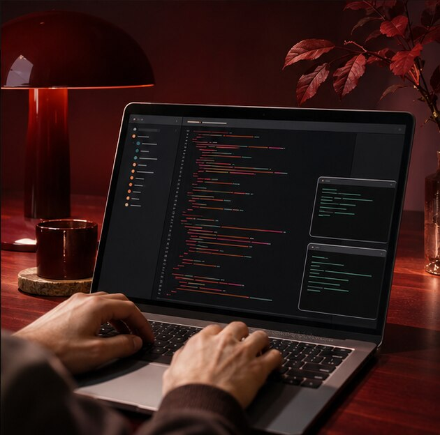

Muso.designs


Design that looks closely.
Development that thinks ahead.
WHAT I MAKE
POSSIBLE.
Your website has to do more than impress for a second. It should help the right people understand you, trust you, and take the next step.
Web & app design
A polished screen is only the beginning. I give your business a distinctive digital presence that expresses what makes it worth choosing, then carry that idea through every page and interaction.
We start with your audience and the job the experience needs to do. From there, I shape the art direction, layout, typography, responsive screens, and the details that make the whole thing feel unmistakably yours.
For clients who want a digital presence with a point of view.UX design
People should not have to work to understand your website. I map what visitors need, organise the content around their questions, and make important actions easy to find.
That means clearer navigation, stronger page flow, useful calls to action, and careful attention to mobile, accessibility, and the little moments where confidence is won or lost.
For clients who need visitors to move from curiosity to action.No-code building
Some ideas need a fast, flexible route to launch. I use visual building tools when they fit the brief, turning the approved design into a working website without adding technical complexity you do not need.
The result is considered from both sides: an experience your visitors can use and a site you can manage. The tool is chosen around the project, not the other way around.
For clients who want to launch and keep moving.Vibe coding
When a project needs custom behaviour or more room to grow, I take it beyond a static mockup. I use Codex and Claude Code as development collaborators while keeping the concept, decisions, and quality bar firmly human-led.
Depending on the brief, that can mean Astro or React for the experience, Cloudflare for hosting or infrastructure, Resend for email, and GitHub for versioned delivery. You get a thoughtful design and a practical build in one connected process.
For clients who need something tailored, functional, and ready to evolve. Jennie Muso
Jennie MusoFounder & Designer
I design with intention, bringing structure and expression together to make websites that speak clearly and feel unmistakably yours. I bring curiosity to every brief, making the complex feel clear, considered, and worth remembering.
Work with meTHINGS I’VE
BEEN THINKING
ABOUT.
Notes on building digital experiences that look good, make sense, and do their job.
Why a good website starts with better questions
Before choosing a font or a platform, get clear on the people and decisions the site needs to serve.
Designing trust before the first hello
Clear language, useful details, and thoughtful pacing help people feel ready to reach out.
Choosing the right way to build
No-code and custom code are both useful. The right choice starts with what the project must become.
Have a project in mind?